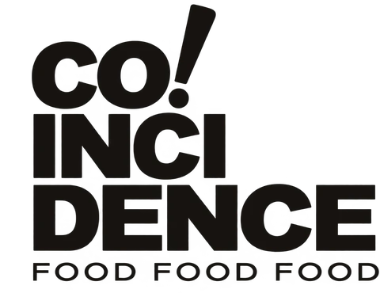

Vous lancez ou reprenez une entreprise.
L’idée est là, ou l’entreprise vient de changer de mains. Il faut poser les bases : organisation, premiers clients, bons partenaires. J’ai lancé plusieurs entreprises, je connais les pièges des premiers mois.
25 ans à créer, diriger et développer des entreprises. Aujourd’hui, je mets cette expérience à côté de vous, pour lancer, accélérer ou redresser la vôtre.

CO! Food EventsStratégie et développement · 2025 (nouvel onglet)Accompagnement de chefs d’entreprise
Créateurs, repreneurs, dirigeants de TPE et de PME jusqu’à 250 salariés. En Auvergne-Rhône-Alpes, et partout en France à distance.
L’idée est là, ou l’entreprise vient de changer de mains. Il faut poser les bases : organisation, premiers clients, bons partenaires. J’ai lancé plusieurs entreprises, je connais les pièges des premiers mois.
Vous êtes sur tous les fronts, l’administratif déborde sur vos week-ends et personne ne peut trancher à votre place. On structure ensemble pour grandir sans vous épuiser.
Trésorerie tendue, équipe qui doute, clients qui s’éloignent. Il faut un regard extérieur et des décisions rapides. Je suis là pour ça.
Cas d’usage
Ce que je fais
Je deviens votre sparring-partner : on prépare, on challenge, vous tranchez.
Ce que je fais
Je rétablis la communication, je clarifie les rôles et je pose des rituels simples qui tiennent.
Ce que je fais
On reprend les chiffres, on allège les charges fixes et on prépare vos rendez-vous avec les banques.
Ce que je fais
On simplifie les process, on outille et on automatise ce qui peut l’être.
Ce que je fais
On retravaille votre offre et votre discours, et j’ouvre mon carnet d’adresses.
Ce que je fais
On revoit votre identité visuelle et votre façon de vous présenter.
Bras droit du dirigeant
Je dirige aujourd’hui six entreprises. Je connais vos nuits courtes, vos décisions à prendre seul et vos fins de mois. Je parle votre langue.
J’ai commencé formateur sur le terrain, avant de prendre la direction régionale d’un grand groupe national. Je sais faire tourner une entreprise au quotidien.
Ancien président des DCF Nord-Isère, administrateur Groupama, membre du conseil de développement du Nord-Isère, président du Réseau Divergent : mon carnet d’adresses travaille aussi pour vous.
Avec SimplX, je conçois des outils sur mesure et des automatisations. On ne s’arrête pas à la stratégie : on outille votre entreprise pour qu’elle aille plus vite.
DG à temps partagé et missions
Un sujet précis, un objectif clair, quelques semaines pour l’atteindre.
Votre bras droit, régulièrement et sur la durée, présent dans les décisions comme dans l’exécution.
Une présence rapide et intensive quand l’entreprise doit se redresser.
Un rendez-vous régulier pour prendre de la hauteur, arbitrer et garder le cap.
Parcours
Formateur HSSE. Le terrain, d’abord.
Responsable qualité et conseiller formation.
Un grand groupe national du contrôle et de la prévention : chef de groupe, puis directeur, puis directeur général régional Sud-Est.
Directeur général de Formatop, formation en santé et sécurité au travail.
Gérant du centre d’affaires Handfield.
Fondation de Secutop, plateforme digitale 360° en santé et sécurité au travail.
CEO d’AdopteUnPrev, PDG de SimplX, directeur stratégie et développement du groupe Agence Coïncidence.
Cofondateur et directeur général de Rayoneo, entreprise à mission dédiée au recrutement inclusif.
Méthode
On commence par vous : votre entreprise, vos chiffres, vos doutes. Sans filtre.
On fixe les priorités. Trois actions qui comptent valent mieux que vingt idées.
Je ne livre pas un rapport : je mets les mains dedans avec vous, jusqu’aux premiers résultats.
On mesure, on ajuste, et vous repartez plus fort, plus structuré et plus autonome.
Cas client
Agence Coïncidence, agence événementielle et traiteur de la région lyonnaise, aujourd’hui CO! Food Events. Des difficultés financières, un management sous tension et des équipes qui ne se parlaient plus.
Mise en place de process clairs, communication rétablie entre les équipes, nouvelle direction artistique, arrivée de nouveaux clients. L’activité est repartie.
Une entreprise assainie, avec moins de charges fixes et une organisation simplifiée.
L’accompagnement s’est si bien passé que je suis resté. Je suis aujourd’hui directeur stratégie et développement du groupe.
« Quand Jean-Philippe est arrivé, on avait la tête dans le guidon et des chiffres qui nous inquiétaient. Il a remis de l’ordre, recréé du lien dans l’équipe et ramené des clients. Aujourd’hui, l’entreprise est plus légère, plus solide, et on sait où on va. »
Questions fréquentes
Un consultant analyse, recommande, puis repart. Moi, je suis dirigeant : je décide avec vous et j’agis avec vous, jusqu’aux résultats.
15 minutes, en visio ou par téléphone. Vous me présentez votre situation, et je vous dis franchement si je peux vous aider.
Si je peux vous aider, on choisit ensemble le format adapté. Sinon, je vous le dis. Et si quelqu’un de mon réseau est mieux placé, je vous mets en relation.
Je suis présent physiquement en Auvergne-Rhône-Alpes et j’accompagne des dirigeants partout en France à distance. Je me déplace pour les moments clés.
De quelques semaines pour une mission précise à plusieurs mois pour un accompagnement de fond. L’objectif reste toujours le même : que vous n’ayez plus besoin de moi.
Toujours. Vos chiffres, vos doutes et vos projets restent entre nous.
Tous. Mon parcours m’a fait travailler avec l’industrie, les services, la formation, l’événementiel et le digital. Les problèmes de dirigeant, eux, se ressemblent partout.
Prendre rendez-vous
15 minutes pour faire le point. Sans engagement, sans jargon. Si je peux vous aider, on verra la suite ensemble.
Rendez-vous de 15 minutes
Le calendrier ne s’affiche pas ? Réserver directement sur cal.com (nouvel onglet)